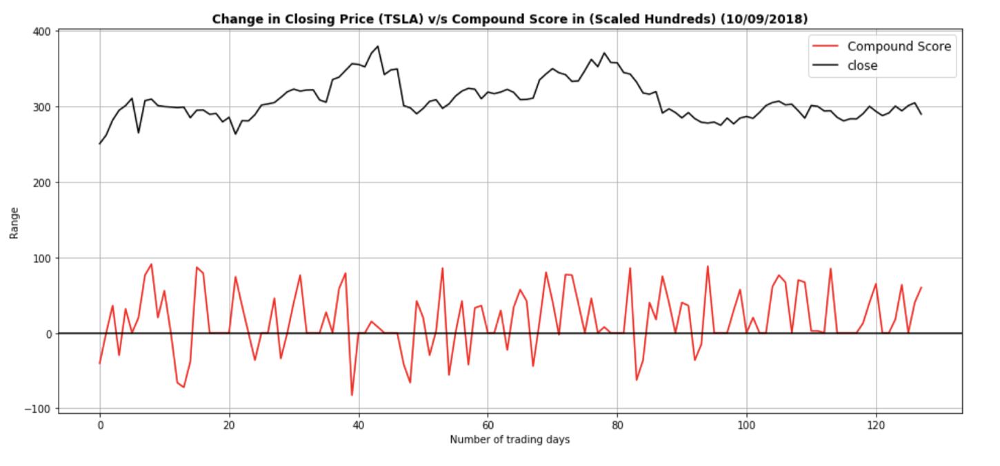
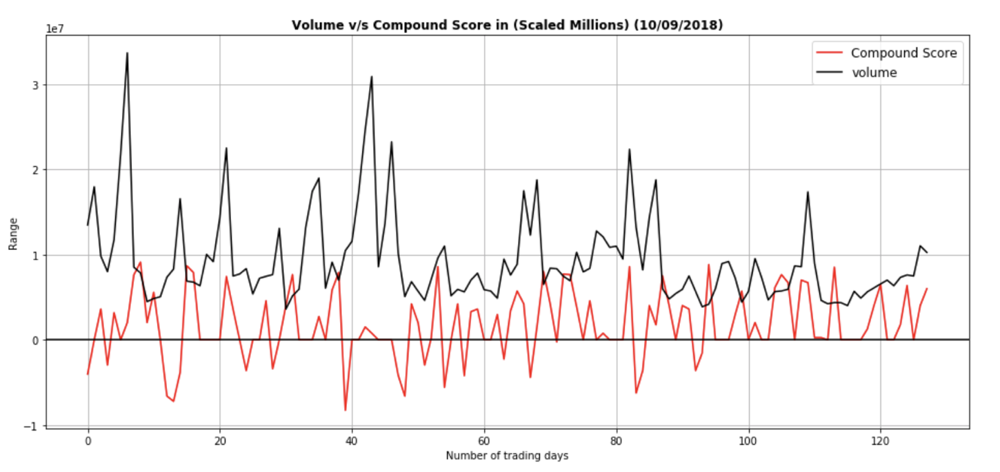

Conclusion
We conclude that, the social media sentiment score along with some other tools and advanced machine learning implementation can predict the movement of stocks based on the behavior/reactions of sentiments analyzed over social media platforms. Also Elon tweets do have a correlation as stated above in the visualisations, so yes we would not be biased just looking at the news or tweets but understanding the data and visualizing we agree. Down Below some real data……..
 